Shimoichi, Nara: things to do, food and stays
Shimoichi · Nara
Shimoichi
Highlighted on the Nara map.

Stay
いやしの宿 千代

Iyashino Yado Chiyo
Inn in Yomura, Shimoichi with one group per day and a renovated traditional house.
Dining
つるべすし 弥助

Tsurubesushi Yasuke
やま十柿の葉すし店
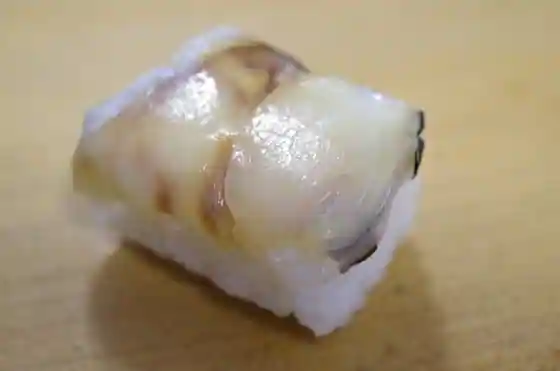
Yama Ju Kaki No Ha Sushi
おけ常
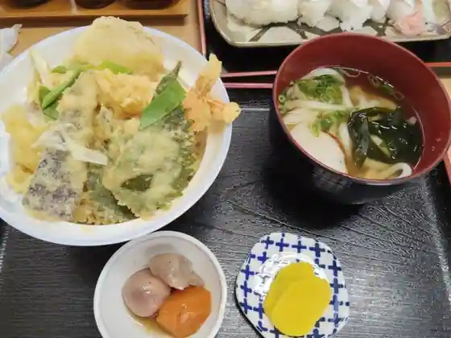
Oke Tsune
ごんた食堂
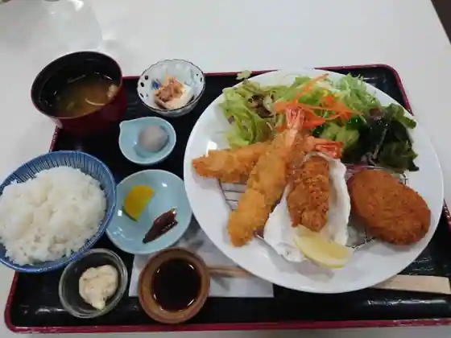
Gonta Shokudo
吉田屋
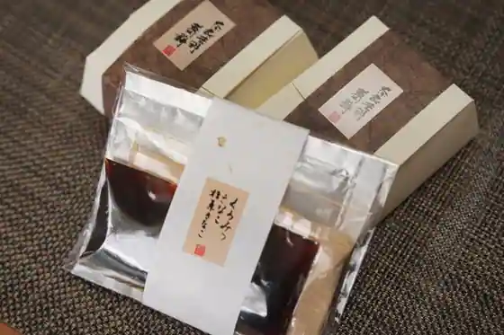
Yoshidaya
WOOD FIRE DINING
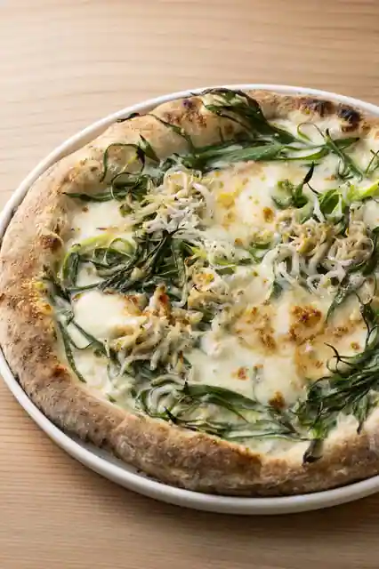
WOOD FIRE DINING
cafe丹生の光
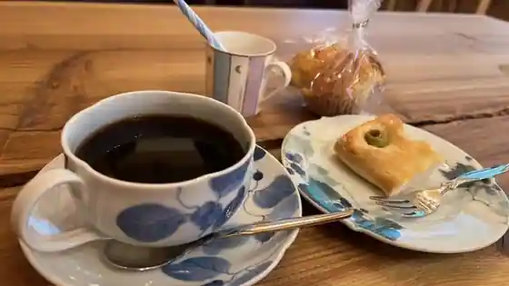
cafe Tanjo No Hikari
鶴萬々堂
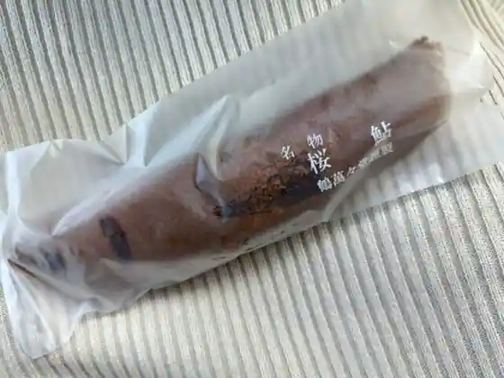
Tsuru Man (Kurikaesi) Do
川富
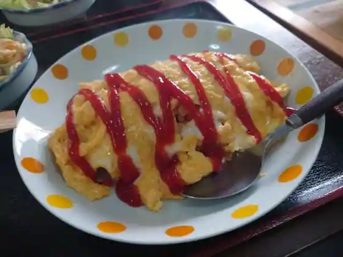
Kawa Tomi
寺坂
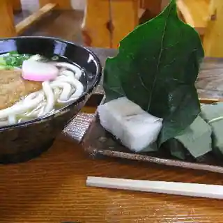
Terasaka
ピザハウス Erba
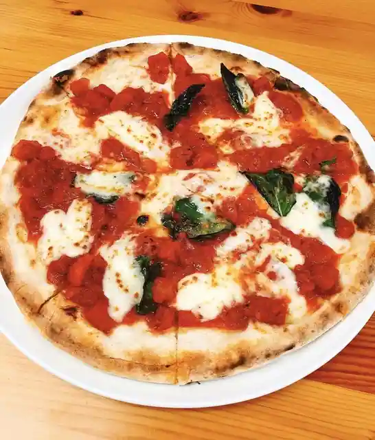
Pizza House Erba
Rural Kitchen “183”
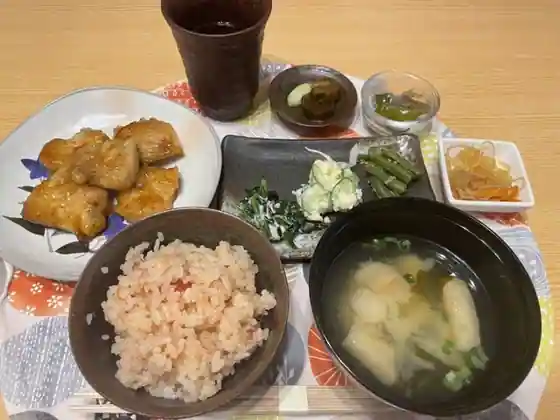
Rural Kitchen 183
札の辻ステーション
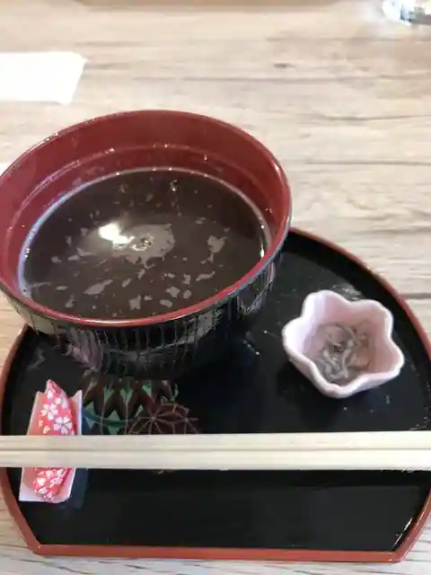
Satsu No Tsuji Station
味道楽 秀嶋
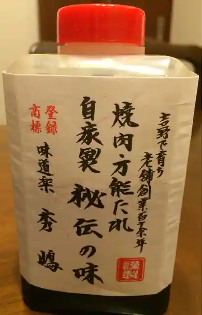
Aji Doraku Shu Shima
奥座敷市場
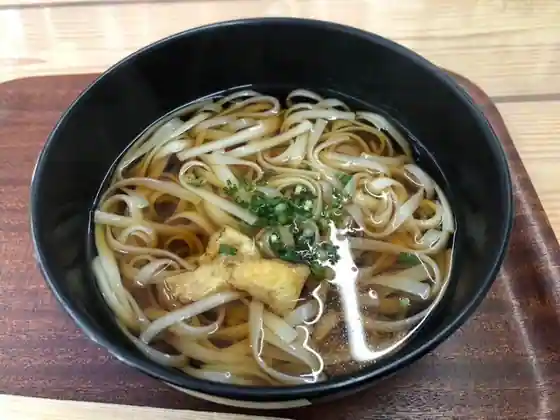
Oku Zashiki Shijo
柿の葉寿司 よいよい
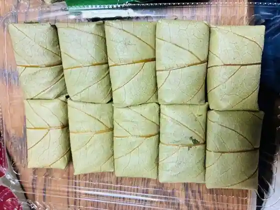
Kaki No Ha Sushi Yoiyoi
カフェピクルス
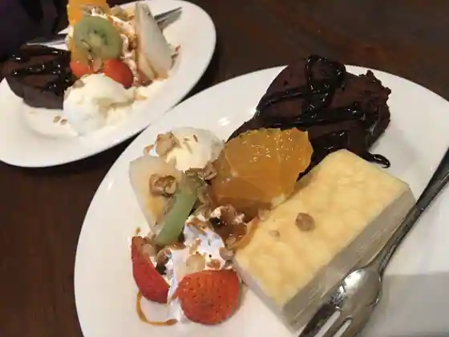
Cafe Pikurusu
一番屋
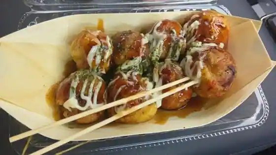
Ichiban Ya
穂
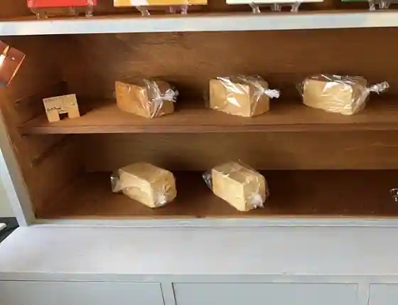
Ho
さつき屋
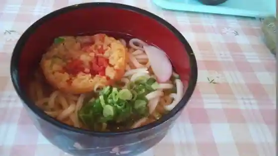
Satsuki Ya
藤村酒造
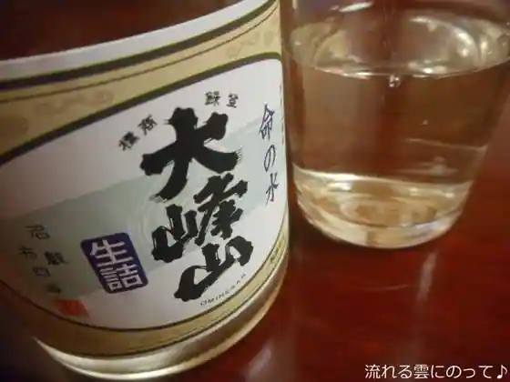
Fujimura Shuzo
Sights
Shimoichi Forest Park Yasuragi Village
Nyukawa Ue Jinja Shimosha

Hirohashi Umebayashi